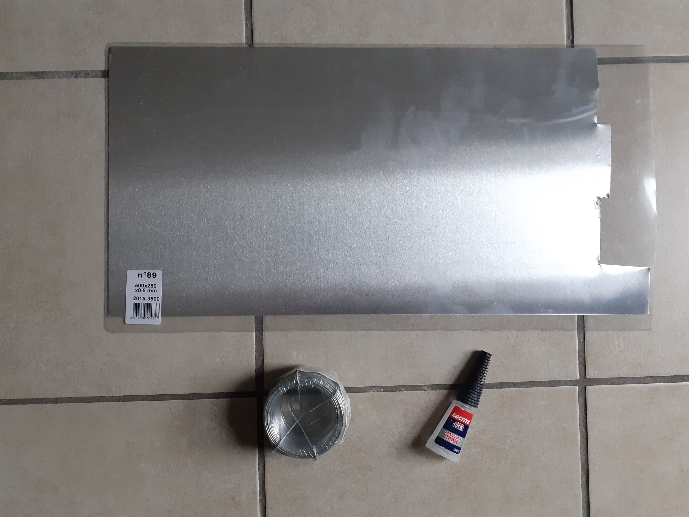
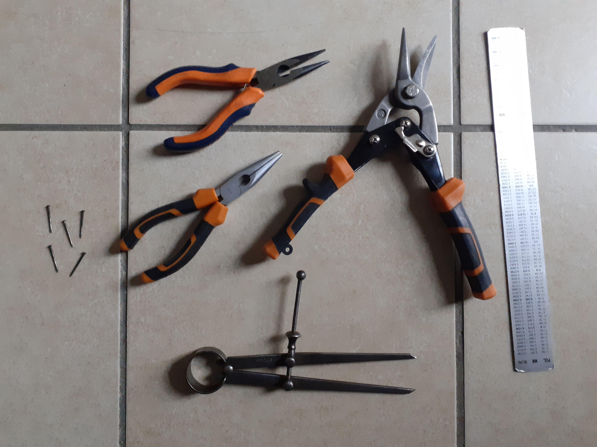

Materials and tools
Materials
When I started making these automata, I really wanted a process that wouldn't require any power tools, so I chose to work with pretty soft materials. Here are the base materials:
- 0.5 mm sheet Aluminum.
- 1.1 mm steel wire.
- Superglue.
Tools
Most of these are really easy to find in any hardware store:
- Pliers: to fold the wires and metal pieces.
- Sheet metal cutter plier: to cut the sheet metal.
- Metal ruler and compass: I mainly use the metal compass for marking the metal and outlining the contours for the pieces I'll be cutting. It does also come in handy to draw circles but only rarely. I wouldn't say it's a necessity.
- Nails and hammer: this is easily the cheapest possible way to punch holes in the aluminum plates. I don't even use a hammer to be honest, I just hit the nails with the pliers.